I need to be able to just open the tool and it explain everything.The first panel is now one whole: the number, how it moved today and since 2018, the pies that turn it into a size for every name, the ceilings, and the room left with the next two buy and trim levels of each name.
Is it always directly proportional or does that change?Inside each pie it is: a name keeps the same share of conviction, or of the core, at any number, so every name moves with the number. One share is not fixed — conviction is 25% of what is invested when the market is stretched, 26.4% today, 30% when it is washed out — and Micron stops at its cap of 30% of the account.
Micron would be 6.45% plus 10.75% … and if we reached 100%, what would be those ceilings?With today's dials Micron is 6.8% plus 16.6% = 23.4% of the account; fully invested, 6.0% plus 24.0% = 30%. The sum in your sentence comes out exactly when the dials are set as you said them (43% invested, conviction one dollar in four, Micron's memory share a fifth of the core).
What it would have looked like at those important lows.The table below; and on the tool, click any day on the chart and the first row of pies shows that day.
Going over is allowed only on conviction breakouts, by a stated band.The band is 5 points of the account: 4 for Micron, 1 for Nebius, never above a ceiling, trimmed first when the breakout ends. It is shut today: Micron opens above 1,097.39 and Nebius above 277.68 (each one's highest close of the past 60 sessions).
Two active buy orders, two active sell orders.Every name shows its next two buy levels and its next two trim levels with a size. Micron: 34 shares at 1,036.13 and 37 at 1,011.77; nothing to trim while it is under its target.
| the day you named | what SPY was doing | SPY close | the number that day |
|---|---|---|---|
| 8 Apr 2025 | a low | 496.48 | 100% |
| 30 Mar 2026 | a low | 631.97 | 88% |
| 29 Jul 2026 | a low | 729.46 | 87% |
| 13 Aug 2026 | a high | 777.88 | 84% |
| 16 Sep 2026 | a low | 754.05 | 85% |
| 6 Oct 2026 | a high | 779.09 | 77% |
Each of the six is the lowest or the highest SPY close of the 21 sessions around it. The number is today's rule on that day's closing prices.
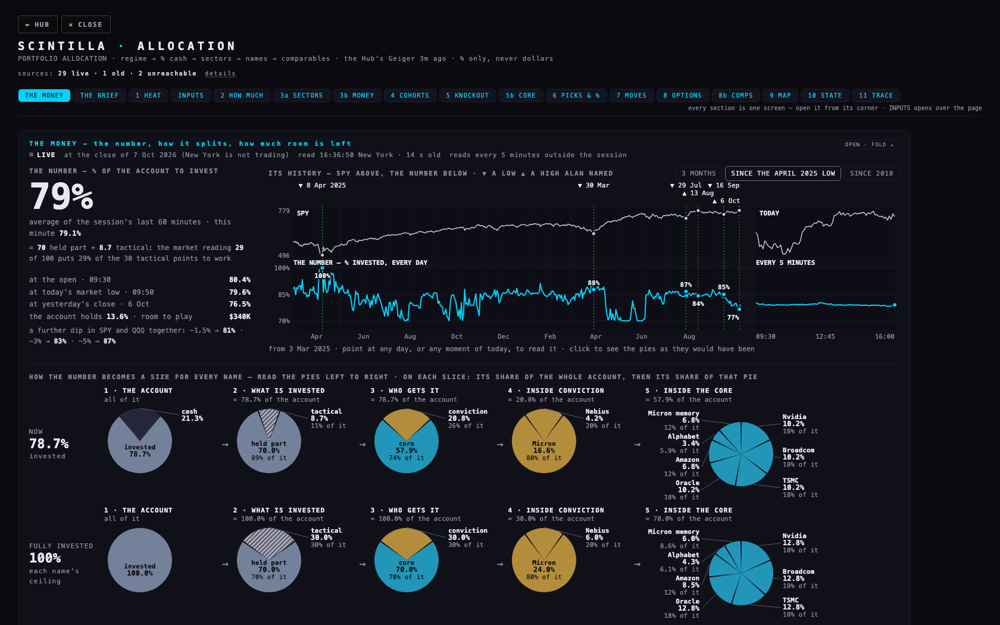
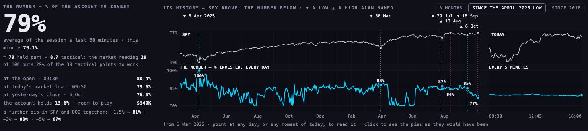
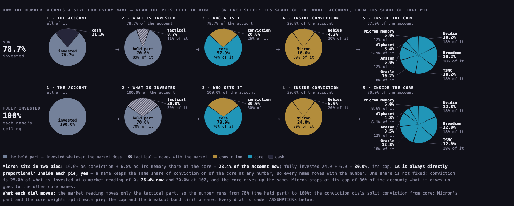
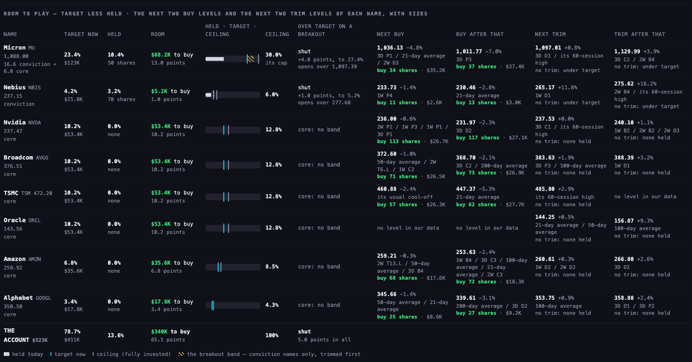
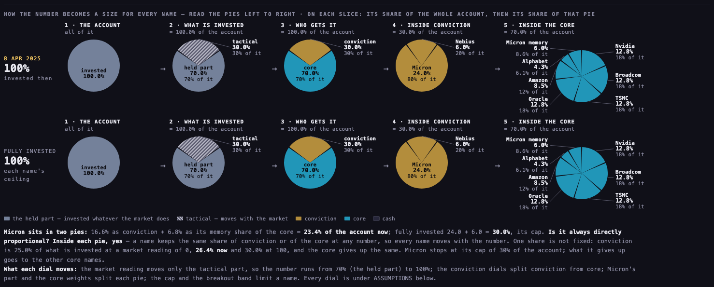
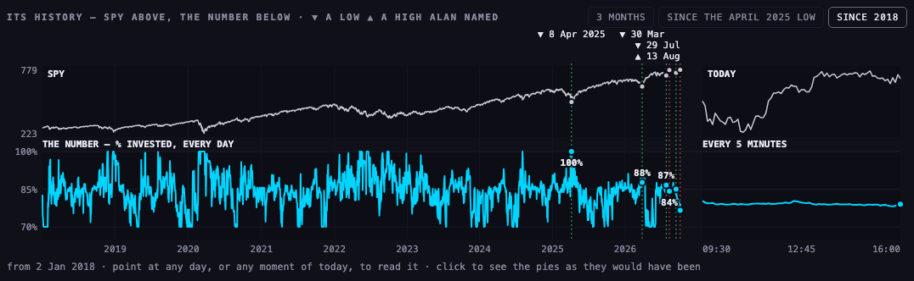
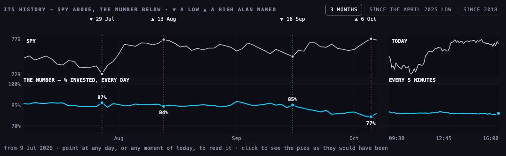
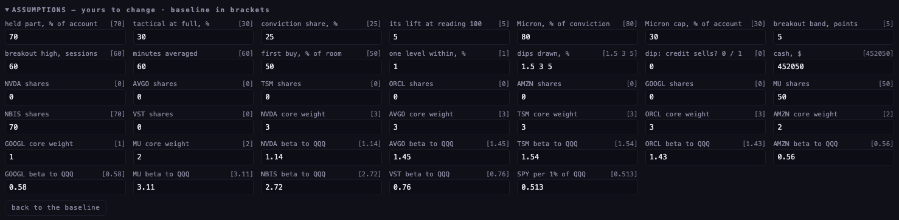
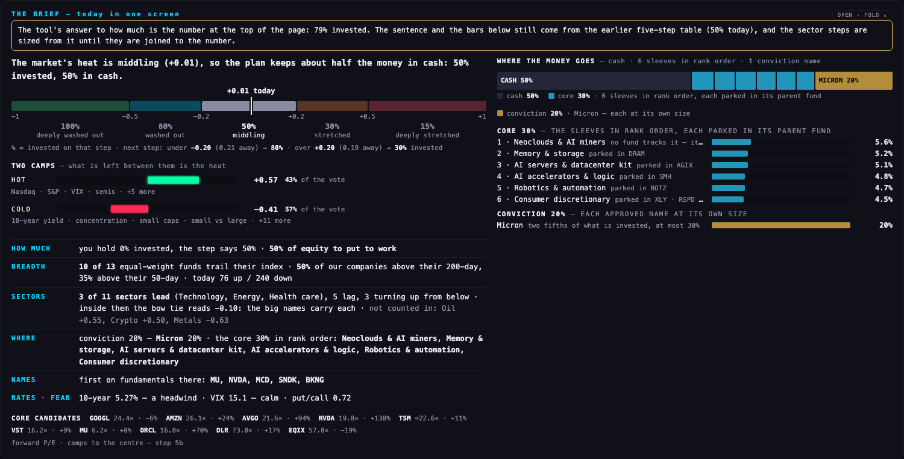
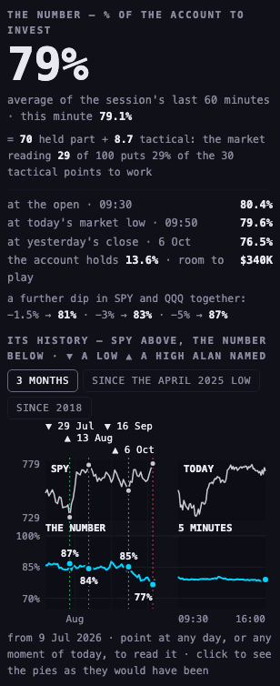
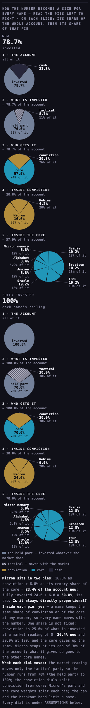
Where the figures on this page come from. They were read off the tool itself when the pictures were taken: 7 October 2026, 16:34 New York, with that day's session closed. The number is the held part (70% of the account) plus the tactical part (up to 30%) multiplied by the market reading, which runs from 0 (a stretched market) to 100 (a washed-out one) and stood at 29 as the average of the session's last hour.
The six days. The number for each is that day's market reading, worked out by the tool's own sum from that day's closing prices, put through the same dials.
The tool's own notes — what each part is and what could be wrong with it — are in PAGE SPECS at the foot of its first panel.
Files. The panel is study/al9/panel.mjs on the arithmetic in study/al9/chain.mjs; the history file is study/al9/data/history.json (scripts/al9-history.mjs builds it); the pictures are taken by scripts/al9-shots.mjs; the checks are tests/al9.test.mjs.